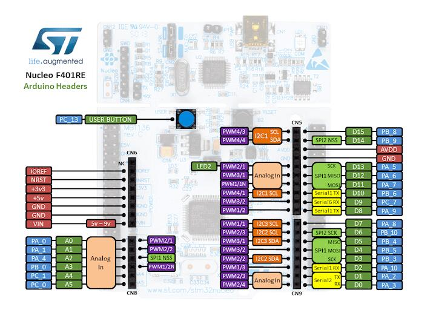
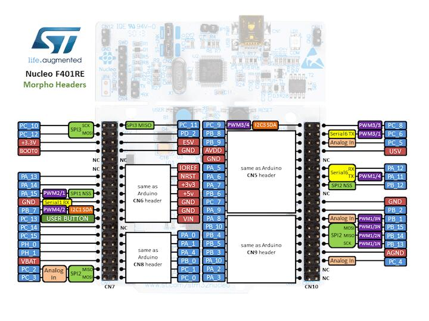

Nucleo F401RE
Overview
The Nucleo F401RE board features an ARM Cortex-M4 based STM32F401RE MCU with a wide range of connectivity support and configurations Here are some highlights of the Nucleo F401RE board:
STM32 microcontroller in QFP64 package
Two types of extension resources:
Arduino Uno V3 connectivity
ST morpho extension pin headers for full access to all STM32 I/Os
On-board ST-LINK/V2-1 debugger/programmer with SWD connector
Flexible board power supply:
USB VBUS or external source(3.3V, 5V, 7 - 12V)
Power management access point
Three LEDs: USB communication (LD1), user LED (LD2), power LED (LD3)
Two push-buttons: USER and RESET
More information about the board can be found at the Nucleo F401RE website.
Hardware
Nucleo F401RE provides the following hardware components:
STM32F401RET6 in LQFP64 package
ARM® 32-bit Cortex®-M4 CPU with FPU
84 MHz max CPU frequency
VDD from 1.7 V to 3.6 V
512 KB Flash
96 KB SRAM
GPIO with external interrupt capability
12-bit ADC with 16 channels
RTC
Advanced-control Timer
General Purpose Timers (7)
Watchdog Timers (2)
USART/UART (3)
I2C (3)
SPI (4)
SDIO
USB 2.0 OTG FS
DMA Controller
More information about STM32F401RE can be found here:
Supported Features
The nucleo_f401re board supports the hardware features listed below.
- on-chip / on-board
- Feature integrated in the SoC / present on the board.
- 2 / 2
-
Number of instances that are enabled / disabled.
Click on the label to see the first instance of this feature in the board/SoC DTS files. -
vnd,foo -
Compatible string for the Devicetree binding matching the feature.
Click on the link to view the binding documentation.
Pin Mapping
Nucleo F401RE Board has 6 GPIO controllers. These controllers are responsible for pin muxing, input/output, pull-up, etc.
Available pins:


For more details please refer to STM32 Nucleo-64 board User Manual.
Default Zephyr Peripheral Mapping:
UART_1 TX/RX : PB6/PB7
UART_2 TX/RX : PA2/PA3 (ST-Link Virtual Port Com)
I2C1 SCL/SDA : PB8/PB9 (Arduino I2C)
SPI1 CS/SCK/MISO/MOSI : PB6/PA5/PA6/PA7 (Arduino SPI)
PWM_2_CH1 : PA0
USER_PB : PC13
LD2 : PA5
System Clock
Nucleo F401RE System Clock could be driven by internal or external oscillator, as well as main PLL clock. By default System clock is driven by PLL clock at 84MHz, driven by 8MHz high speed external clock.
Serial Port
Nucleo F401RE board has 3 UARTs. The Zephyr console output is assigned to UART2. Default settings are 115200 8N1.
I2C
Nucleo F401RE board has up to 3 I2Cs. The default I2C mapping for Zephyr is:
I2C1_SCL : PB8
I2C1_SDA : PB9
Programming and Debugging
The nucleo_f401re board supports the runners and associated west commands listed below.
| flash | debug |
|---|
Nucleo F401RE board includes an ST-LINK/V2-1 embedded debug tool interface.
Applications for the nucleo_f401re board configuration can be built and
flashed in the usual way (see Building an Application and
Run an Application for more details).
Flashing
The board is configured to be flashed using west STM32CubeProgrammer runner, so its installation is required.
Alternatively, OpenOCD or JLink can also be used to flash the board using
the --runner (or -r) option:
$ west flash --runner openocd
$ west flash --runner jlink
Flashing an application to Nucleo F401RE
Connect the Nucleo F401RE to your host computer using the USB port, then run a serial host program to connect with your Nucleo board:
$ minicom -D /dev/ttyACM0
Now build and flash an application. Here is an example for Hello World.
# From the root of the zephyr repository
west build -b nucleo_f401re samples/hello_world
west flash
You should see the following message on the console:
Hello World! arm
Debugging
You can debug an application in the usual way. Here is an example for the Hello World application.
# From the root of the zephyr repository
west build -b nucleo_f401re samples/hello_world
west debug